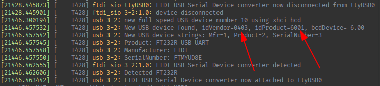

Como crear reglas udev para conceder acceso a dispositivos.
Necesitamos crear una regla udev siempre que tengamos algún dispositivo (gamepad, adaptador usb...etc), al que queremos tener acceso y no lo tenemos por defecto.
Para crear una nueva regla primero tenemos que crear un archivo en una de las siguientes carpetas:
/etc/udev/rules.d/
/usr/lib/udev/rules.d/
El nombre del archivo en el que incluyamos las reglas tiene el siguiente formato:
numero-nombre.rules
Por ejemplo:
60-ftdi.rules
Dentro del archivo tendremos que incluir la regla udev, en esta regla tendremos que incluir:
Para saber el idVendor y el idProduct lo podemos mirar usando dmesg despues de conectar el dispositivo:
Para tener acceso al dispositivo normalmente se da un permiso (MODE) de "0660" y se indica un GROUP en el que esté el usuario, también podemos indicar permisos "0666" pero eso dará permiso a todos los usuarios, lo cual no suele ser recomendable a nivel de seguridad.
Unos ejemplos de reglas de udev son las siguientes:
SUBSYSTEMS=="usb", ATTRS{idVendor}=="045e", MODE="0660", GROUP="my_group"
SUBSYSTEM=="tty", ATTRS{idVendor}=="0403", ATTRS{idProduct}=="6001", MODE="0660", GROUP="dialout", TAG+="uaccess"
En vez de indicar una máscara de permisos con MODE podemos indicar la opción TAG+="uaccess" y esto dará acceso al usuario local que esté logueado en el sistema.
Las reglas que tengan el tag uaccess tienen que estar colocadas antes de la siguiente regla:
73-seat-late.rules
IMPORTANTE: Si no están colocadas antes de esta regla (simplemente con darles un número menos que 73 al principio del nombre ya basta), el tag uaccess no funcionará.
udev | dev